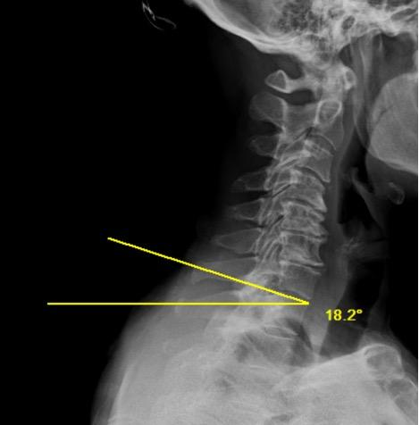
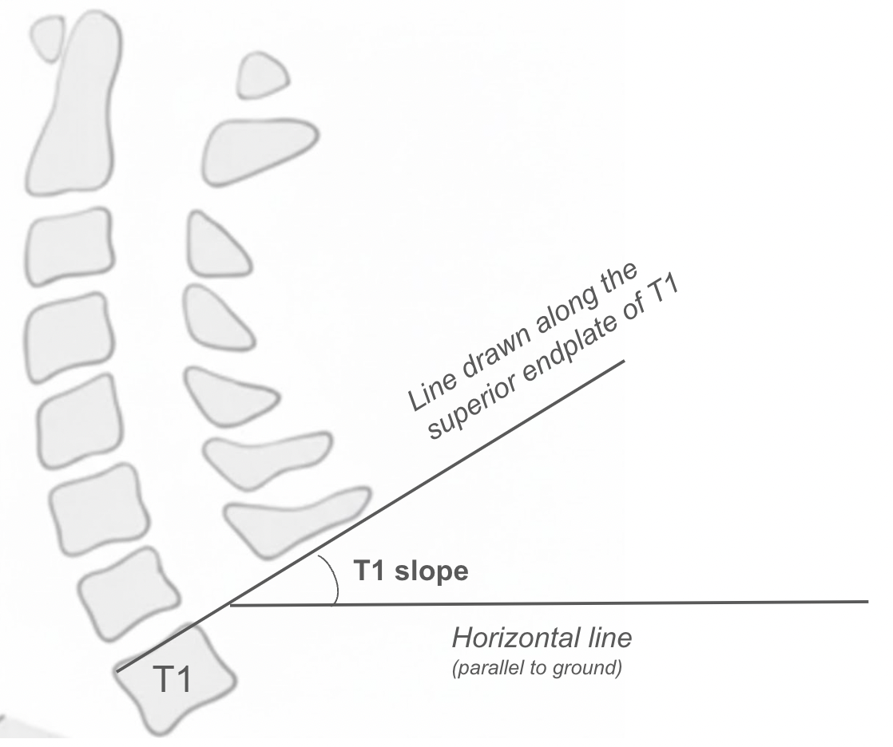

1) Description of Measurement
The T1 slope (T1S) is the angle between the superior endplate of the T1 vertebral body and the horizontal plane on a standing lateral radiograph. It serves as the foundational parameter for understanding cervical sagittal alignment, which many authors have suggested is similar to the role of pelvic incidence in the lumbar spine.
T1 slope defines the inclination of the platform upon which the cervical spine sits. Biomechanically, a higher T1 slope requires a greater cervical lordosis to maintain horizontal gaze and keep the head balanced. Just as a greater pelvic incidence requires greater lumbar lordosis to compensate, a greater T1 slope requires greater cervical lordosis. When this compensatory relationship fails, termed T1 slope–cervical lordosis (TS–CL) mismatch, the cervical spine falls into positive sagittal imbalance, resulting in increased disability and worse clinical outcomes.
T1 slope is a key predictor for planning the degree of lordotic correction in cervical deformity surgery
2) Instructions to Measure
• Obtain a standing neutral lateral cervical spine X-ray with clear visualization of the T1 vertebral body; the patient should be in a comfortable upright position with horizontal gaze
• Identify the superior endplate of T1 and draw a line along it
• Draw a horizontal reference line (parallel to the ground)
• Measure the angle between the superior endplate of T1 and the horizontal line; this is the T1 slope
• A higher T1 slope indicates a more anteriorly tilted T1, which requires more cervical lordosis to maintain horizontal gaze; a lower T1 slope indicates a more horizontal T1 endplate with less lordosis required
• Important: the T1 superior endplate can be difficult to visualize on lateral cervical radiographs due to shoulder overlap. If T1 cannot be clearly seen, the radiograph should be repeated with the shoulders depressed or the measurement can be obtained from a standing full-spine lateral radiograph or cervical CT sagittal reconstruction.
◦ Note that T1 slope measured on supine CT will differ from standing values due to the effect of gravity and posture.
3) Normal vs. Pathologic Ranges
• Normal T1 slope: approximately 15-25° in asymptomatic adults. Ferraz et al. (2025) performed a meta-analysis across 20 studies and reported a pooled mean T1S of 21.3° (95% CI: 18.5–24.1°) with a computed normative range of 15–25°.
• Upper end T1 slope > 25° - 30°: Knott et al. (2010) reported that patients with T1S > 25° should undergo full-length standing spine radiographs because of the increased likelihood of positive global sagittal imbalance. Fares et al. (2025) continued this study and found that T1S > 30° was associated with higher Thoracic Kyphosis (TK), Sagittal Vertical Axis (SVA), T1-Pelvic Angle (TPA), Pelvic Tilt (PT), and Pelvic Incidence minus Lumbar Lordosis (PI-LL).
• T1S–CL mismatch (T1 slope minus cervical lordosis): Normative ranges for correction targets are still limited by data. However leading researchers in the cervical deformity space (Staub et al. 2018) have suggested a relationship between the two parameters of 16.5° ± 2° for cases where T1S is >16.5. The ISSG therefore appears to suggest that cervical lordosis can be predicted by the formula: CL = T1S – 16.5° ± 2°.
• A T1S–CL > 20° appears to preliminarily correlate to clinically meaningful disability improvements where as T1S–CL > 40° appears to correlate to inferior and worse postoperative disability relative to preoperative status. (Ferraz et al. 2025)
◦ In cases where T1S is <16.5 then careful consideration should be made as this subset of patients may have a naturally kyphotic spine. (Staub et al. 2018)
Key Principle: T1 slope is a patient-specific anatomical variable that dictates how much cervical lordosis is needed to maintain sagittal balance and horizontal gaze. The T1S–CL mismatch is the cervical spine equivalent of the PI–LL mismatch in the lumbar spine and should be a primary target in cervical deformity correction surgery.
4) Important References
Knott PT, Mardjetko SM, Techy F. The use of the T1 sagittal angle in predicting overall sagittal balance of the spine. Spine J. 2010 Nov;10(11):994-8. doi: 10.1016/j.spinee.2010.08.031.
Zhang, Z., Wang, J., Ge, R. et al. A novel classification that defines the normal cervical spine: an analysis based on 632 asymptomatic Chinese volunteers. Eur Spine J 33, 155–165 (2024). https://doi.org/10.1007/s00586-023-07997-7
Hyun SJ, Kim KJ, Jahng TA, Kim HJ. Relationship between T1 slope and cervical alignment following multilevel posterior cervical fusion surgery: impact of T1 slope minus cervical lordosis. Spine (Phila Pa 1976). 2016 Apr;41(7):E396-402. doi: 10.1097/BRS.0000000000001264.
Staub BN, Lafage R, Kim HJ, et al. Cervical mismatch: the normative value of T1 slope minus cervical lordosis and its ability to predict ideal cervical lordosis. J Neurosurg Spine. 2019 Jan;30(1):31-37. doi: 10.3171/2018.5.SPINE171232.
Patel PD, Arutyunyan G, Plusch K, Vaccaro A Jr, Vaccaro AR. A review of cervical spine alignment in the normal and degenerative spine. J Spine Surg. 2020 Mar;6(1):106-123. doi: 10.21037/jss.2020.01.10. PMID: 32309650; PMCID: PMC7154373.
Ani, Fares MD*; Ayres, Ethan W. MD, MPH*; Woo, Diann MD†; Vasquez-Montes, Dennis MS*; Brown, Avery MD‡; Alas, Haddy MD§; Abotsi, Edem J. MD*; Bortz, Cole MD*; Pierce, Katherine E. BS*; Raman, Tina MD*; Smith, Micheal L. MD*; Kim, Yong H. MD*; Buckland, Aaron J. MBBS*; Protopsaltis, Themistocles S. MD*. High Preoperative T1 Slope Is a Marker for Global Sagittal Malalignment. Clinical Spine Surgery 38(6):p E306-E311, July 2025. | DOI: 10.1097/BSD.0000000000001734
Ferraz VR, Goulart CR, Mattei TA. A systematic review and meta-analysis of sagittal cervical spine parameters: normative values, correlation with quality of life, and biomechanical modeling. North Am Spine Soc J (NASSJ). 2026;25:100819.
Ye IB, Tang R, Cheung ZB, White SJW, Cho SK. Can C7 slope be used as a substitute for T1 slope? A radiographic analysis. Global Spine J. 2020 Aug;10(5):148749631984690. doi: 10.1177/2192568219846909.
Staub BN, Lafage R, Kim HJ, Shaffrey CI, Mundis GM, Hostin R, Burton D, Lenke L, Gupta MC, Ames C, Klineberg E, Bess S, Schwab F, Lafage V; International Spine Study Group. Cervical mismatch: the normative value of T1 slope minus cervical lordosis and its ability to predict ideal cervical lordosis. J Neurosurg Spine. 2018 Oct 5;30(1):31-37. doi: 10.3171/2018.5.SPINE171232. PMID: 30485176.
5) Other info….
T1 slope is often referred to as analogous to pelvic incidence (PI) in the lumbar spine in that it is the key morphological parameter driving regional alignment requirements. However, it is important to be aware that unlike PI (which is fixed), T1 slope is a positional parameter that is more sensitive to changes in posture, thoracic kyphosis, and global spinal alignment. If the goal is to observe a fixed parameter relative to the spine in the cervico-thoracic junction, then please refer to our section on the thoracic inlet angle (TIA). (Link this here ***)
Difficulty visualizing the T1 endplate on standard lateral cervical radiographs due to shoulder overlap is a well-recognized limitation.
Consider evaluating T1 slope in conjunction with other parameters including but not limited to, C2–C7 Cobb angle (cervical lordosis), C2–C7 SVA, T1S–CL mismatch, chin-brow vertical angle (CBVA), thoracic inlet angle (TIA), neck tilt (NT), and C2 slope for a comprehensive cervical sagittal balance assessment.
Caution: It is important for the reader to be aware that while T1S and CL appear directly linearly influential of one another such as PI and LL, leading deformity research groups have suggested that cervical mismatch (CL – T1S) may be independent of thoracic input. A preliminary correction goal for CL in patients with cervical deformity may be refined further based on the work within the ISSG. CL = T1S - 16.5° ± 2° does exist. (Staub et al. 2018)